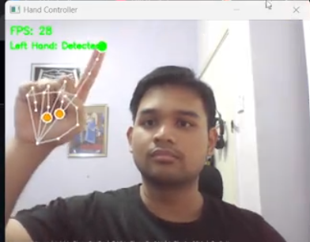

GestureMouse
A computer vision project that utilizes MediaPipe to detect fingers and hands to operate a mouse.

Project Overview
GestureMouse is a computer vision project that utilizes MediaPipe to import data from the library and configure a way to detect fingers and hands to operate functions of a mouse entirely through gestures.
Technologies Used
Key Features
- Hand Tracking: Leverages MediaPipe to accurately recognize hand landmarks in real-time.
- Cursor Control: Smoothly moves the mouse cursor based on the index finger's position.
- Gesture Operations: Uses finger combinations to trigger clicks and other mouse functions.
- No Hardware Required: Operates using only a standard webcam.